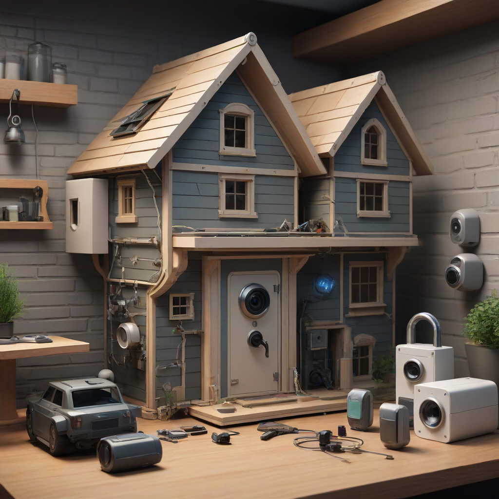

Securing your home is one of the most critical responsibilities of property ownership, yet the market has shifted dramatically in recent years. In 2026, the landscape is defined by wireless home security systems that prioritize user control and flexibility. Gone are the days of heavy drilling and expensive long-term contracts. Today, smart home security kits allow you to protect your property without compromising your rental agreement or your budget. Whether you are a homeowner looking to upgrade an aging system or a renter seeking a temporary solution, understanding the best DIY home security systems 2026 is essential for maintaining peace of mind.
The primary advantage of modern DIY solutions is the ability to tailor the system to your specific risk profile. You don't need to pay for a full house package if you only need entry sensors and a camera. Furthermore, the technology has matured significantly. False alarms are down due to advanced AI detection, and mobile apps provide instant notifications that allow you to verify threats before calling the police. This guide cuts through the marketing noise to provide an honest, safety-focused evaluation of the top five systems available this year.
Before diving into specific products, it is vital to understand that security is a layered approach. A system is only as good as its installation and maintenance. We have evaluated these options based on monitoring reliability, smart home compatibility, and installation ease. By choosing a home alarm systems no contract solution, you retain the power to move your security when you move your home, ensuring safety travels with you wherever you live.
What to Look for in the Best DIY Home Security Systems 2026

When evaluating the best DIY home security systems 2026, it is not enough to look at the sticker price of the hardware. True value lies in the monitoring infrastructure and the longevity of the devices. A cheap sensor that dies in a year costs more in the long run than a premium unit with a five-year lifespan. As a security expert, I recommend prioritizing three core pillars when making your selection: reliability, connectivity, and scalability.
Reliability and Battery Life
The first line of defense is the sensor itself. In a DIY environment, you are responsible for maintenance. Look for systems that offer long battery life and clear indicators when power is low. More importantly, ensure the base station has a cellular backup. If your Wi-Fi goes down during a storm or a power outage, a system without cellular backup is useless. This is non-negotiable for serious home safety. Wireless home security systems rely heavily on your network, so redundancy is key.
Smart Home Integration
Modern security is part of a larger ecosystem. The best home security for renters often includes smart locks, lights, and plugs. If your security system can work with Google Home, Amazon Alexa, or Apple HomeKit, you gain the ability to automate your safety. For example, you can have lights turn on when the alarm arms, simulating occupancy. This integration transforms a simple alarm into a comprehensive smart home security kit that deters intruders through automation rather than just alerting after the fact.
Monitoring Options and Contracts
One of the biggest draws of DIY is the freedom from long-term contracts. However, self-monitoring is a high-stress option. If you are away, who checks the camera? Professional monitoring services typically cost between $10 and $30 per month. The best DIY home security systems 2026 offer flexible plans where you can pause or cancel anytime. Avoid companies that lock you into 36-month agreements, as this defeats the purpose of a renter-friendly, DIY approach.
Check Connectivity: Ensure the system supports 2.4GHz and 5GHz Wi-Fi bands for stability.
Verify Local Storage: For DIY security camera systems, local st
orage (SD card or home hub) protects your data if the cloud service fails.
Assess Warranty: A two-year warranty is standard, but three years is superior for long-term protection.
Top 5 DIY Home Security Systems Reviewed
After rigorous testing and analyzing customer feedback, we have identified the top five systems that meet safety standards for 2026. These products range from budget-friendly options to premium suites, ensuring there is a fit for every household.
1. SimpliSafe Home Security System
SimpliSafe remains the gold standard for home alarm systems no contract. Its modular design allows you to start small with a keypad and entry sensors, then expand as needed. The system is incredibly user-friendly, making it ideal for seniors or those not tech-savvy. The 2026 update includes improved Wi-Fi range and a more robust cellular backup module.
Pricing: Starter Kit starts at $249. Monitoring is $17.99/month (No contract).
Cons: Video doorbell requires a separate subscription for cloud storage, no local storage option on the base.
This is the best choice for homeowners who want a set-it-and-forget-it system with reliable professional monitoring. It excels in simplicity without sacrificing safety features.
2. Ring Alarm Pro
The Ring Alarm Pro bridges the gap between security and smart home convenience. Its standout feature is the built-in eero Wi-Fi 6 router, meaning you get security and improved internet in one box. For those deeply invested in the Amazon ecosystem, this is the best home security for renters. It integrates seamlessly with Ring cameras and smart locks.
Pricing: Base Kit starts at $249. Monitoring with Pro features is $20/month.
Cons: Requires a Ring Protect subscription for video recording, complex setup for non-Amazon users.
If you already own Ring cameras, this system unifies your security dashboard. However, be aware that video features are locked behind a subscription.
3. Arlo Secure 2 Home Security System
Arlo is famous for its cameras, and the Secure 2 brings that video quality to a whole-home system. This is the top pick for DIY security camera systems. The wireless cameras are weather-resistant and offer high-resolution night vision. The 2026 models feature AI that distinguishes between people, pets, and vehicles, drastically reducing false alerts.
Pricing: Starter Kit starts at $299. Monitoring plans start at $4.99/month for self-monitoring features.
Pros: Superior video quality, excellent battery life on cameras, smart detection AI.
Cons: Expensive subscription for full features, sensors are slightly larger than competitors.
This system is ideal for users who prioritize visual verification over motion detection. If you want to see exactly what triggered the alarm, Arlo is the way to go.
4. Abode Smart Security Kit
Abode offers the most advanced automation capabilities of any system on this list. It is a true smart home security kit that works with virtually any brand of smart device, not just its own. This open-platform approach is perfect for tech enthusiasts who want to integrate custom solutions. It supports local storage via an SD card slot in the hub, giving you privacy over your footage.
Pricing: Kit starts at $329. Monitoring is $9.99/month (No contract).
Pros: Local storage option, open smart home ecosystem, no contract monitoring.
Cons: Higher learning curve for automation, hardware is pricier upfront.
Abode is best for homeowners who want granular control over their data and security logic. It is the most flexible option for custom setups.
5. Eufy Security eufyCam 3C Pro
Eufy focuses heavily on privacy and cost savings over time. Their system allows you to store video footage locally on the HomeBase rather than in the cloud. This means no monthly subscription fees for video storage, making it incredibly budget-conscious. The cameras feature high-end night vision and long battery life.
Pricing: System starts at $350. Optional monitoring is $2.99/month.
Pros: No mandatory subscription for video storage, excellent local security features, strong battery performance.
Cons: Professional monitoring is limited compared to competitors, app interface is less polished.
This is the best value for those who want to avoid recurring costs. If you are comfortable managing your own footage, Eufy saves you hundreds of dollars annually.
Comparison of Top DIY Security Systems
To help you visualize the differences, we have compiled a comparison table highlighting the critical features for 2026. This allows for a quick side-by-side analysis of pricing, contracts, and key capabilities.
System
Starting Price
Monthly Monitoring
Contract Required
Best For
SimpliSafe
$249
$17.99
No
Reliability & Simplicity
Ring Alarm Pro
$249
$20.00
No
Amazon Ecosystem Users
Arlo Secure 2
$299
$10.00+
No
Video Surveillance
Abode
$329
$9.99
No
Smart Home Automation
Eufy
$350
$0 (Local)
No
Privacy & Budget
Note that prices are subject to change based on promotions and regional availability. Always check the official website for the most current pricing in 2026. When choosing, consider your primary threat. If it is burglary, sensors are key. If it is surveillance, cameras are key. Most users benefit from a hybrid approach.
DIY vs. Professional Installation: The Safety Verdict
One of the most common questions I receive is whether DIY is safe compared to professional installation. The short answer is yes, provided you follow the guidelines. Professional installers drill into drywall and run wires through walls, which can be invasive. DIY wireless home security systems use adhesive mounts and battery power. This means no damage to your property, which is a huge plus for renters.
However, professional monitoring is still recommended. DIY installation refers to setting up the hardware. Professional monitoring refers to the service that calls the police when the alarm triggers. You can have a DIY system with professional monitoring (like SimpliSafe) or a professionally installed system with self-monitoring. Do not confuse the two. For maximum safety, pair a DIY installation with a cellular-backup professional monitoring plan.
Another safety consideration is Wi-Fi security. Many DIY systems connect to your home network. Ensure your Wi-Fi password is strong and unique. A compromised network can give an intruder access to your security footage. Use a guest network for your security devices if your router supports it. This isolates your security system from your personal computers and phones, adding a layer of cybersecurity to your physical security.
Installation Tips for Maximum Safety
Installing your new system correctly is just as important as buying the right hardware. A poorly placed sensor can be bypassed easily, leaving your home vulnerable. Follow these expert tips to ensure your DIY security camera systems and sensors are effective.
Secure Entry Points: Place contact sensors on all exterior doors and ground-floor windows. These are the most common entry points for intruders.
Height Matters: Install motion sensors at chest height (around 5 feet) to prevent pets from triggering them while still detecting adults.
Corner Placement: Position cameras in corners to maximize the field of view. Avoid pointing them directly at the sun to prevent lens flare.
Power Outage Prep: Test your system's cellular backup by unplugging the base station. Ensure it switches to battery power without losing connectivity.
Label Everything: If you have multiple sensors, label them in the app (e.g., "Front Door," "Garage"). This ensures you know exactly where an alert is coming from during an emergency.
Furthermore, keep your passwords secure. Change the default password on your security hub immediately. Use a password manager to generate complex, unique passwords. Many security breaches happen not because the system was hacked, but because the user used a weak password like "123456". Treat your security system credentials with the same importance as your bank account.
Frequently Asked Questions
Homeowners often have specific concerns regarding DIY security setups. Below are the answers to the most common questions we receive at alarmbeepguide, covering everything from pets to moving homes.
Will a DIY System Work With Pets?
Yes, most modern systems offer "pet immune" motion sensors. These sensors use heat signatures and weight thresholds to ignore animals under a certain size (usually 40-60 lbs). However, cameras may still trigger notifications for pets. To avoid false alarms, place cameras higher up or use AI video detection settings that filter out animal movement. If you have large dogs, contact sensors on doors are safer than motion sensors in shared living areas.
Can I Take My System With Me If I Move?
This is one of the greatest benefits of home alarm systems no contract. Unlike hardwired systems, DIY components are battery-powered and wireless. You can simply unstick the sensors, pack the base station, and reinstall them in your new home. Most companies offer a "move your system" discount, which allows you to activate the system at a new address for free or at a reduced rate.
Is Self-Monitoring Enough for Safety?
Self-monitoring means you receive alerts on your phone, but you must call the police yourself. This is risky if you are sleeping or the phone is out of reach. Professional monitoring ensures that a trained dispatcher calls the police immediately upon alarm verification. For the best DIY home security systems 2026, we recommend a hybrid plan where you self-monitor during the day and use professional monitoring when away or asleep.
Do These Systems Work Without Wi-Fi?
Yes, but with limitations. Most systems use Wi-Fi for video streaming and app control, but they rely on Cellular 4G/LTE for alarm signals. If your Wi-Fi goes down, the system can still call the monitoring center via cellular backup. Ensure you have the cellular backup subscription active. Without it, a Wi-Fi outage renders the alarm silent.
How Much Does Monitoring Cost Per Month?
Professional monitoring typically ranges from $10 to $30 per month. The lower end usually includes app access and basic police dispatch. The higher end includes video storage, smart home automation, and warranty protection. Some systems like Eufy allow you to skip monitoring entirely for local storage, saving you money but requiring you to manage alerts manually.
Conclusion
Choosing the right security system is a personal decision that depends on your budget, your home layout, and your risk tolerance. Based on our analysis, the SimpliSafe Home Security System remains the most balanced choice for the best DIY home security systems 2026, offering reliability without the hassle of contracts. For those prioritizing video evidence, Arlo and Eufy provide superior visual capabilities.
Remember that technology is only one layer of defense. Physical security measures like deadbolts, window locks, and exterior lighting are equally important. Pair your new smart home security kit with good habits: keep your keys in a secure location, don't hide spare keys outside, and vary your routine so neighbors don't know when you are away.
Take action today by assessing your entry points and selecting a system that fits your lifestyle. Safety is an investment, and in 2026, it has never been easier to protect your family and property without breaking the bank. Check out our detailed guides on [smart lock installation] and [Wi-Fi security best practices] to further harden your home's defenses. Stay safe, stay informed, and keep your home secure.
MC
Alarm Beep Guide
Editor de Tecnología en Mejor Conexión
Especialista en telecomunicaciones con más de 5 años analizando proveedores de internet en México.
Nuestro equipo compara precios reales, velocidades y cobertura para ayudarte a elegir la mejor conexión.
✓ Datos verificados 2026✓ Actualizado: 2026-05-29✓ Transparencia editorial